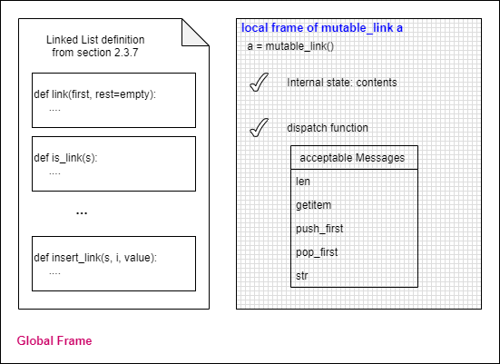

2.9.1 Linked List Class
Nov 12, 2020
structure2.png)
structure2.png)
print_partitions uses map_link, which returns a Link, I don't think we need that. I defined a toString function to deal with it.
extend_link(s, t) will return a linked list whose length is the sum of the length of s and t
linked list method has each linked list individually a complete solution to partitions(n, m)
join_link assumes that the argument linked list is a simple one, the first element of each node is a number instead of a Link.
- No functions actually mutate any argument as a linked list. For example, insert_link or extend_link doesn't actually mutate the arguments.
- If we implement the code, we will look up linked list definitions/functions only in the global frame and our linked lists are only kept in the global frame.
Let me explain the first one first. Among the functions we developed, it seems to me there're two categories of functions. One is getter group, which fetches certain information from the argument (a linked list). Members of the group are first, rest, is_link, getitem_link; the other one is setter group, which returns a mutated linked list. Members of setter group are extend_link and insert_link.
However, setter group actually doesn't mutate arguments. Instead, it returns a newly constructed linked list. Below you will see the code and the command line experiments:
empty = 'empty'
def link(first, rest=empty):
assert is_link(rest), 'rest must be a list'
return [first, rest]
def is_link(s):
return s == empty or (type(s) == list and len(s) == 2 and is_link(s[1]))
def first(s):
return s[0]
def rest(s):
return s[1]
def len_link(s):
if s == empty:
return 0
return 1 + len_link(rest(s))
def getitem_link(s, i):
assert i <= len_link(s) - 1, 'the index is out of range'
if i == 0:
return first(s)
return getitem_link(rest(s), i - 1)
def join_link(s, separator):
"""return linked list s as a readable string;
s is not mutated."""
if s == empty:
return empty
if rest(s) == empty:
return str(first(s))
else:
return str(first(s)) + separator + join_link(rest(s), separator)
def extend_link(s, t):
"""Return a list with the elements of s followed by those of t;
s and t are not modified."""
assert is_link(t), 't must be linked list'
if s == empty:
return t
else:
return link(first(s), extend_link(rest(s), t))
def insert_link(s, i, value):
"""linked list s is mutated"""
if i == 0:
return link(value, s)
assert i <= len_link(s), 'index is out of range'
return link(first(s), insert_link(rest(s), i - 1, value))
a = link(1)
a
(out)[1, 'empty']
insert_link(a, 1, 2)
(out)[1, [2, 'empty']] # the return shows a different linked list as expected
a
(out)[1, 'empty'] # however, a is actually not changed
a = insert_link(a, 1, 2) # to make the change in effect, we have to assign the result to a
a
(out)[1, [2, 'empty']] # now it works
If we want, we could mutate the arguments. For example, below is another version of the insert_link function:
def insert_link2(s, i, value):
if i == 0:
s = link(value, s)
return s
if i == 1:
u = link(value, rest(s))
s = link(first(s), u)
return s
u = s # get the pointer of target linked list s
for _ in range(i - 1): # move the pointer along the linked list towards the index position
u = rest(u)
u[1] = link(value, rest(u)) # modify the (i-1)th node of the linked list so that the ith node contains the value
return s
The difference between the two versions is whether they mutate their arguments. Also, the re-assignment of the target linked list happens outside of the function in the first version but inside of the function in the second one. I guess Python will destroy objects in memory automatically by its garbage collection mechanism, so we don't need to worry too much about dynamic memory allocation and memory cells in limbo issue (which leads to the memory leak problem). Therefore, the first one should be preferred, since it's much easier to write and maintain.
Here's program's status in the global frame, you could see that all of the linked list functions and our linked lists are only in the global frame.
Above is my observation on those two points I mentioned. I am not quite sure whether they are bad or not. But in section 2.4.11, the book shows us that a linked list could be kept inside a function's local frame, which resolves these two issues nicely.
The function is a higher-order function, which utilizes our self-defined linked list structure (constructor, functions, etc) in the global frame but keeps the linked list as its local state in its local frame so that the function kind of has its own identiy. Here's the illustration:
Besides the constructor mutable_link() which always starts with an empty linked list, the book shows us another constructor taking in a sequence and storing it in contents as a linked list.
def to_mutable_link(source): # source is a sequence(eg. list, range)
"""Return a functional linked list with the same contents as source."""
s = mutable_link()
for element in reversed(source):
s('push_first', element)
return s
We encounter a new method called reversed above. Here's the definition of it from Python website:
reversed(seq[uence]): Return a reverse iterator. seq must be an object which has a __reversed__() method or supports the sequence protocol (the __len__() method and the __getitem__() method with integer arguments starting at 0).
We've learnt that an object with its internal state has its own identity. The same as our function mutable_link(). Let's check it out.
suite # I have defined suite beforehand and I am going to use it in the second constructor
(out)['heart', 'diamond', 'spade', 'club']
s2 = to_mutable_link(suite)
s2('str')
(out)'heart, diamond, spade, club'
s3 = to_mutable_link(suite)
s3('str')
(out)'heart, diamond, spade, club'
s2 is s3
(out)False # although s2 and s3 have the same contents, but they are distinct objects
The second part of this section shows us how to self-define a dictionary function utilizing Python's built-in list structure [in the global frame] and keeps the list as its internal state only in its local frame. The dictionary function kind of has two components: one is its internal state (a Python built-in list which could be updated later) and the other is its dispatch function which actions according to the incoming messages. Here's the illustration:
In conclusion, we could define a higher-order function which keeps an element as its internal state and returns a dispatch function which interprets incoming messages regarding the internal element. The internal element should be a container that holds certain data and be liable to change responsibly according to the incoming messages. Candidates of the element could be Python's built-in data structure like list or our self-defined linked list structure. It cannot be a tuple though, since tuple is immutable.